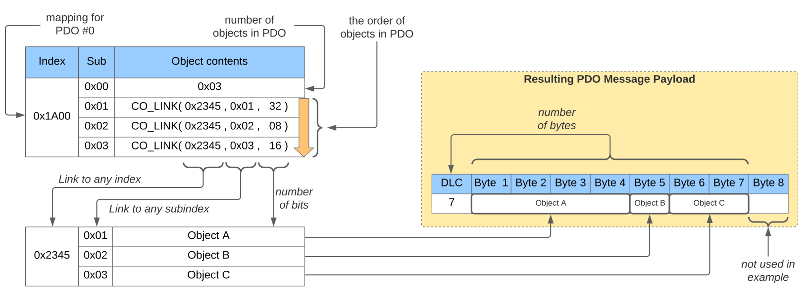

Configuration#
Configuration Options#
Application Parameter#
This chapter describes the specification of the parameter groups. The parameter structures are highly application-specific and shall be defined within the application header files.
Example:
typedef struct COM_PARA_MEM_T {
uint16_t Heartbeat_1017_0;
} COM_PARA_MEM;
typedef struct APP_PARA_MEM_T {
uint32_t DemoLong;
uint16_t DemoWord;
uint8_t DemoByte;
} APP_PARA_MEM;
typedef struct ALL_PARA_MEM_T {
COM_PARA_MEM Com;
APP_PARA_MEM App;
} ALL_PARA_MEM;
This example defines multiple parameter groups:
-
a parameter group containing the communication profile parameter (COM_PARA_MEM)
-
a parameter group containing the application-specific parameter (APP_PARA_MEM)
-
The third definition collects the previously defined parameter groups to a single parameter group to allow loading and storage of both parameter groups with single access (ALL_PARA_MEM)
These structure type definitions are recommended to force the linker to place the corresponding parameter variables in a consecutive memory block. Any other technique to get this result is reasonable, too.
Within the object directory configuration, the parameter group information structures shall be allocated and filled with the corresponding parameter group information settings.
Example:
static const CO_PARA AllParaObj = {
0L, /* placement in non-volatile memory */
sizeof(ALL_PARA_MEM),
(uint8_t *)&Para,
(uint8_t *)&ParaDef,
CO_RESET_NODE,
(void *)"all.txt",
CO_PARA___E
};
static const CO_PARA ComParaObj = {
0L, /* placement in non-volatile memory */
sizeof(COM_PARA_MEM),
(uint8_t *)&Para.Com,
(uint8_t *)&ParaDef.Com,
CO_RESET_COM,
(void *)"com.txt",
CO_PARA___E
};
static const CO_PARA AppParaObj = {
sizeof(COM_PARA_MEM), /* placement in non-volatile memory */
sizeof(APP_PARA_MEM),
(uint8_t *)&Para.App,
(uint8_t *)&ParaDef.App,
CO_RESET_NODE,
(void *)"app.txt",
CO_PARA___E
};
The following descriptions explains the details of the table members:
-
The parameter group size [
uint32_t] shall be set to the number of bytes within the parameter group memory area -
The start address of the parameter group memory area [
uint8_t *] shall be set to the first address of the parameter group memory -
The reset type [
CO_NMT_RESET] shall be set to one of the following values:
| Reset Type | Description |
|---|---|
CO_RESET_COM |
parameter group shall be set to the stored values on communication reset |
CO_RESET_NODE |
parameter group shall be set to the stored values on node reset |
-
The pointer to the identification [
void *] of this parameter group is not used by the CANopen stack. This member is intended to identify the different parameter groups within the application callback functions, related to the parameter handling. Any type of identification may be used for this purpose. In the shown example, an identification string is used. -
The parameter group feature indication [
uint32_t], which is returned on a simple object entry read access, shall be set to one of the following values:
| Parameter Feature | Description |
|---|---|
CO_PARA____ |
parameter group is disabled |
CO_PARA___E |
parameter group is enabled and will be stored on command |
CO_PARA__A_ |
parameter group is enabled and will be stored autonomously |
CO_PARA__AE |
parameter group is enabled and will be stored on command and autonomously |
Note: "autonomously" means without CANopen network interaction; e.g. the application is responsible for the storage of these parameter groups.
The object entries, handling the saving and restoring of parameters, shall be set for the example to the following values:
{ CO_KEY(0x1010, 0, CO_UNSIGNED8 |CO_OBJ_D__R_), 0, (CO_DATA)(0x03) },
{ CO_KEY(0x1010, 1, CO_UNSIGNED32|CO_OBJ____RW), CO_TPARA, (CO_DATA)(&AllParaObj) },
{ CO_KEY(0x1010, 2, CO_UNSIGNED32|CO_OBJ____RW), CO_TPARA, (CO_DATA)(&ComParaObj) },
{ CO_KEY(0x1010, 3, CO_UNSIGNED32|CO_OBJ____RW), CO_TPARA, (CO_DATA)(&AppParaObj) },
{ CO_KEY(0x1011, 0, CO_UNSIGNED8 |CO_OBJ_D__R_), 0, (CO_DATA)(0x03) },
{ CO_KEY(0x1011, 1, CO_UNSIGNED32|CO_OBJ____RW), CO_TPARA, (CO_DATA)(&AllParaObj) },
{ CO_KEY(0x1011, 2, CO_UNSIGNED32|CO_OBJ____RW), CO_TPARA, (CO_DATA)(&ComParaObj) },
{ CO_KEY(0x1011, 3, CO_UNSIGNED32|CO_OBJ____RW), CO_TPARA, (CO_DATA)(&AppParaObj) },
The single parameters are most likely used within the object directory. The example definition of an object entry is shown for one parameter:
{ CO_KEY(0x1017, 0, CO_UNSIGNED16|CO_OBJ____RW), 0, (CO_DATA)(&Para.App.DemoWord) },
Domain Definition#
This chapter describes the specification of an object with the type domain. The domains are highly application-specific and are usable in a wide range.
Example:
CO_OBJ_DOM AppDomain = {
0,
sizeof(APP_PARA_MEM),
&AppParaObj
};
This example defines a domain information object for the already allocated memory space of the variable AppParaObj (a variable within the application parameter example). This allows access to the complete application parameter set with SDO segmented or block transfers from within the CANopen network.
The following descriptions explains the details of the structure members:
-
The domain offset [
uint32_t] shall be set to 0 to access the first byte of the domain -
The domain size [
uint32_t] in bytes shall be set to the number of bytes within the domain memory area -
The start address of the domain memory area [
uint8_t *] shall be set to the first address of the domain
The object entry, presenting the example domain above to the CANopen network, should be defined within the manufacturer-specific area (e.g. index 0x2500, subindex 0x00) with the following object directory entry definition line:
{ CO_KEY(0x2500, 0, CO_DOMAIN|CO_OBJ____RW), CO_TDOMAIN, (CO_DATA)(&AppDomain) },
Note: The standard type implementation CO_TDOMAIN assumes, that the domain memory is located in RAM and is direct accessible. For other types of domain, a project-specific domain type shall be implemented.
Heartbeat Consumer Definition#
This chapter describes the specification of a heartbeat consumer object.
Example:
CO_HBCONS AppHbConsumer_1 = { 0 };
/* optional somewhere during startup: */
AppHbConsumer_1.Time = 100; /* heartbeat consumer time of 100ms */
AppHbConsumer_1.NodeId = 42; /* heartbeat consumer for node 42 */
This example defines a heartbeat consumer object. The initialization of all members with 0 is good practice, but not mandatory. The heartbeat consumer object allows the configuration of a heartbeat consumer with SDO transfers from within the CANopen network or during configuration time.
The following descriptions explains the details of the structure members, which should be initialized (via application - or via an SDO write access):
-
The Time [
uint16_t] shall be set to the heartbeat consumer time in ms. The monitoring of the addressed heartbeat starts after the first reception of the addressed heartbeat. -
The NodeId [
uint8_t] shall be set to the CANopen Node-ID of the heartbeat producer, which shall be consumed.
The object entry, presenting the example domain above to the CANopen network, should be defined within the heartbeat consumer area (index 0x1016, subindex 0x01 ff.) with the following object directory entry definition line:
{ CO_KEY(0x1016, 0, CO_DOMAIN|CO_OBJ_D__R_), 0, (CO_DATA)(1) },
{ CO_KEY(0x1016, 1, CO_DOMAIN|CO_OBJ____RW), CO_THB_CONS, (CO_DATA)(&AppHbConsumer_1) },
Note: Even, if the members "Time" and "NodeId" are static, the heartbeat consumer must be placed in RAM. There are multiple internal members for managing the heartbeat consumer included as well.
Emergency Code Definition#
This chapter describes the definition of the Emergency error code table. This table must be in line with the Emergency identifier enumeration.
Example:
const CO_EMCY_TBL AppEmcyCode[CO_EMCY_N] = {
{ CO_EMCY_REG_GENERAL, CO_EMCY_CODE_GEN_ERR + 0x01 }, /* APP_EMCY_1 */
{ CO_EMCY_REG_CURRENT, CO_EMCY_CODE_CUR_ERR + 0x01 }, /* APP_EMCY_2 */
{ CO_EMCY_REG_VOLTAGE, CO_EMCY_CODE_VOL_ERR + 0x01 }, /* APP_EMCY_3 */
{ CO_EMCY_REG_TEMP , CO_EMCY_CODE_TEMP_ERR + 0x01 } /* APP_EMCY_4 */
};
This example defines 4 emergency codes within different error register classes (first entry of each line). The emergency codes itself are based on the standard emergency codes (second entry of each line).
The following descriptions explains the details of the table members:
- The error register bit definition [
uint8_t] shall be set to one of the following values:
| Error Register Bit | Description |
|---|---|
CO_EMCY_REG_GENERAL |
general error (includes all other classes) |
CO_EMCY_REG_CURRENT |
error class: current |
CO_EMCY_REG_VOLTAGE |
error class: voltage |
CO_EMCY_REG_TEMP |
error class: temperature |
CO_EMCY_REG_COM |
error class: communication |
CO_EMCY_REG_PROFILE |
error class: profile specific error |
CO_EMCY_REG_MANUFACTURER |
error class: manufacturer specific |
- The emergency error code [
uint16_t] shall be set to the application-specific error code. This error code should be defined acc. the CANopen specification.
The EMCY handling and object directory manipulations with these definitions is performed by the CANopen stack without further definitions.
The application is able to register, clear, reset, check and count emergency errors with the provided function API. For details on this API, see Reference Manual [2].
Example:
status = COEmcyGet(&Node.Emcy, APP_EMCY_1);
This example gets the current status of the Emergency error with the given emergency identifier APP_EMCY_1.
Object Dictionary#
This chapter describes the configuration table representing the CANopen object dictionary. This is the central element of the CANopen node. This table can be placed in RAM or in ROM. The placement decides, which access type is possible with direct entries. Most likely this table is placed in ROM because RAM is in most cases the limited resource.
const CO_OBJ AppObjDir[] = {
{ <ObjEntryKey_0>, <ObjTypeRef_0>, <ObjData_0> }, /* first object entry */
:
{ <ObjEntryKey_N>, <ObjTypeRef_N>, <ObjData_N> }, /* last object entry */
CO_OBJ_DIR_ENDMARK
};
Each line represents a single object entry definition. The collection of object entries shall be sorted in ascending order in index and subindex.
The following chapters describes the details of the table members.
Object Entry Key#
The object entry key [uint32_t] shall be constructed with the following macro:
CO_KEY(<index>, <subindex>, <specification>)
-
The index is a 16bit value with possible range from 0x0000 to 0xFFFF
-
The subindex is an 8bit value with the possible range from 0x00 to 0xFF
Note: to be compliant to the CANopen specification, the defined index and subindex ranges shall be considered.
- The object specification shall be set to a bitwise disjunction of the listed values for object entry size and the object access mode.
| Object Entry Size | Description |
|---|---|
CO_UNSIGNED8 |
CANopen Datatype: UNSIGNED8 |
CO_UNSIGNED16 |
CANopen Datatype: UNSIGNED16 |
CO_UNSIGNED32 |
CANopen Datatype: UNSIGNED32 |
CO_SIGNED8 |
CANopen Datatype: SIGNED8 |
CO_SIGNED16 |
CANopen Datatype: SIGNED16 |
CO_SIGNED32 |
CANopen Datatype: SIGNED32 |
CO_DOMAIN |
CANopen Datatype: DOMAIN |
CO_STRING |
CANopen Datatype: STRING |
Object entry access mode field shall be set to one of the following values:
| Object Access Mode | Description |
|---|---|
CO_OBJ____R_ |
Read Only |
CO_OBJ_____W |
Write Only |
CO_OBJ____RW |
Read/Write |
CO_OBJ___PR_ |
Read Only, PDO Map |
CO_OBJ___P_W |
Write Only, PDO Map |
CO_OBJ___PRW |
Read/Write, PDO Map |
CO_OBJ__N_R_ |
Read Only, + Node-Id |
CO_OBJ__N__W |
Write Only, - Node-Id |
CO_OBJ__N_RW |
Read/Write, ± Node-Id |
CO_OBJ__NPR_ |
Read Only, PDO Map, + Node-Id |
CO_OBJ__NP_W |
Write Only, PDO Map, - Node-Id |
CO_OBJ__NPRW |
Read/Write, PDO Map, ± Node-Id |
CO_OBJ_D__R_ |
Read Only, Direct Access |
CO_OBJ_D___W |
Write Only, Direct Access |
CO_OBJ_D__RW |
Read/Write, Direct Access |
CO_OBJ_DN_R_ |
Read Only, + Node-Id, Direct Access |
CO_OBJ_DN__W |
Write Only, - Node-Id, Direct Access |
CO_OBJ_DN_RW |
Read/Write, ± Node-Id, Direct Access |
Note: The access types read-only, write-only and read/write specifies the possible access types from the CANopen network to that object entry. The application is always able to read and write the object entry.
When placing the object entry table in read-only memory (with keyword "const"), the direct access modes (tread pointer as object entry value), are limited to read-only access, even by the application.
Important
When using architectures with pointer types lower than 32bit (e.g. 16bit microcontrollers), you can store only values up to the pointer width directly in the object dictionary. For larger values declare a constant variable and place a pointer to this constant into the object dictionary.
Object Type Reference#
The object entry type structure reference [CO_OBJ_TYPE *] shall be set to one of the following values:
| Object Type | Description |
|---|---|
| 0 (zero) | Basic type, no special handling |
CO_TASYNC |
Asynchronous PDO signal entry |
CO_TDOMAIN |
Domain entry |
CO_TEMCY |
EMCY history entry |
CO_TEMCYID |
Dynamic EMCY COB-ID |
CO_TEVENT |
PDO event timer entry |
CO_THB_PROD*) |
Heartbeat producer entry |
CO_THB_CONS |
Heartbeat consumer entry |
CO_TPARA |
Parameter group store/restore entry |
CO_TPDOID |
Dynamic PDO COB-ID entry |
CO_TPDOMAP |
Dynamic PDO mapping entry |
CO_TPDONUM |
Dynamic PDO number of mapping entries |
CO_TPDOTYPE |
Dynamic PDO transmission type entry |
CO_TSDOID |
Dynamic SDO COB-ID entry |
CO_TSTRING |
Unlimited read-only string |
CO_TSYNCID |
Dynamic SYNC COB-ID |
*) The object type CO_THEARTBEAT is obsolete and replaced by the new CO_THB_PROD. We keep the previous type for compatibility reasons, but you should change your object type to the new one.
Object Data Reference#
The object data reference [CO_DATA] shall be set in dependence to the object flags and the object type structure reference to different values.
| Object Type | Object Flags | Required Content in Data Pointer |
|---|---|---|
| 0 (zero) | CO_OBJ__xxxx |
address of variable |
| 0 (zero) | CO_OBJ_Dxxxx |
value in data pointer |
CO_TASYNC |
N/A | address of variable |
CO_TDOMAIN |
N/A | address of domain info structure |
CO_TEMCY |
N/A | address of EMCY history entry |
CO_TEMCYID |
N/A | address of variable |
CO_TEVENT |
N/A | address of variable |
CO_THB_PROD |
N/A | address of variable |
CO_THB_CONS |
N/A | address of heartbeat consumer structure |
CO_TPARA |
N/A | address of parameter group info structure |
CO_TPDOID |
N/A | address of variable |
CO_TPDOMAP |
N/A | address of variable |
CO_TPDONUM |
N/A | address of variable |
CO_TPDOTYPE |
N/A | address of variable |
CO_TSDOID |
N/A | address of variable |
CO_TSTRING |
N/A | address of string info structure |
CO_TSYNCID |
N/A | address of variable |
PDO Mapping Value#
For the PDO mapping object entries, we must encode the object data value in the following way:

You can use the macro CO_LINK to get the value in a readable way:
CO_LINK(<destination-index>, <destination-subindex>, <mapping-bits>)
For example, when you want to map an object entry with a size of 8 bits from index 0x2100, subindex 0x02 to your PDO, the mapping entry in the object dictionary is:
/* variable for object entry data */
uint8_t MyData = 0u;
/* object dictionary */
const CO_OBJ AppObjDir[] = {
:
/* PDO mapping entry */
{CO_KEY(0x1A00, 1, CO_UNSIGNED32|CO_OBJ_D__R_), 0, (CO_DATA)(CO_LINK(0x2100, 0x02, 8))},
:
/* mapped object entry */
{CO_KEY(0x2100, 2, CO_UNSIGNED8 |CO_OBJ___PR_), 0, (CO_DATA)(&MyData)},
:
CO_OBJ_DIR_ENDMARK
};
Note: this CANopen stack supports the mapping of 8, 16, 24 or 32bits.
Transmit PDO Communication#
This chapter describes the PDO communication record for a transmit PDO. The object record contains the following object entries:
| Index:sub | Type | Object Type | Description |
|---|---|---|---|
1800h:00 |
UNSIGNED8 |
const |
Communication Object TPDO #0 |
1800h:01 |
UNSIGNED32 |
const or rw with CO_TPDOID |
COB-ID used by TPDO |
1800h:02 |
UNSIGNED8 |
const or rw with CO_TPDOTYPE |
Transmission type |
1800h:03 |
UNSIGNED16 |
const or rw |
Inhibit time with LSB 100us (0=disable) |
1800h:04 |
n/a | n/a | reserved, shall not be implemented |
1800h:05 |
UNSIGNED16 |
const or rw with CO_TEVENT |
Event timer LSB 1ms (0=disable) |
The index identifies which PDO is configured (1800h: TPDO #0, 1801h: TPDO #1, ..., 19ffh: TPDO #511). The object type is const in case of static communication settings. When the communication settings are parameters or dynamic variables, the listed object types ensures the correct change behavior for these records.
The encoding for the transmission type (subindex 2) is standardized:
| Value | Description |
|---|---|
| 00h | acyclic |
| 01h..F0h | cyclic every n-th SYNC (1..240) |
| F1h..FDh | reserved |
| FEh | event-driven (manufacturer specific) |
| FFh | event-driven (device profile specific) |
Timer Memory Block#
This chapter describes the allocation of the data memory, required by the CANopen timer module. The presented source code lines represent the default and must not be changed. The typical need on changing this memory allocation is to place this memory to a specific place in internal or external RAM.
CO_TMR_MEM AppTmrMem[CO_TMR_N];
SDO Transfer Memory#
This chapter describes the allocation of the data memory, required by the CANopen SDO server module. The presented source code lines represent the default and must not be changed. The typical need on changing this memory allocation is to place this memory to a specific place in internal or external RAM.
uint8_t AppSdoBuf[CO_SSDO_N][CO_SDO_BUF_BYTE];
Note: This memory is used only when support for SDO segmented or block transfers are performed.
Node Specification#
This chapter describes the basic node specification. This table must be existent for each CANopen node, which shall be active within the CANopen device.
Example:
const CO_NODE_SPEC AppSpec = {
(uint8_t ) 0x01, /* pre-defined Node-ID */
(uint32_t ) Baudrate, /* default baudrate */
(CO_OBJ *)&AppObjDir, /* start of object directory */
(uint16_t ) APP_OBJ_N, /* number of objects in directory */
(CO_EMCY_TBL *)&AppEmcyCode, /* start of emergency code table */
(CO_TMR_MEM *)&AppTmrMem, /* start of timer manager memory */
(uint16_t ) APP_TMR_N, /* max. number of timers/actions */
(uint32_t ) APP_TICKS_PER_SEC, /* timer clock frequency in Hz */
(CO_IF_DRV )&AppDrv, /* hardware interface drivers */
(uint8_t *)&AppSdoBuf /* start of SDO transfer buffer */
};
This example specifies the basic node information for the example node. Each entry is a part of the configuration. This structure is only required during the startup of the CANopen stack.
If SDO block and segmented transfer is disabled, e.g. the SDO transfer buffer is not used, the last entry in the node specification can be set to NULL.
The following example creates a single CANopen node:
extern const CO_NODE_SPEC AppSpec;
CO_NODE AppNode;
void StartNode (void)
{
CONodeInit(&AppNode, (CO_NODE_SPEC *)&AppSpec);
if (CONodeGetErr(&AppNode) != CO_ERR_NONE) {
/* error handling */
}
};